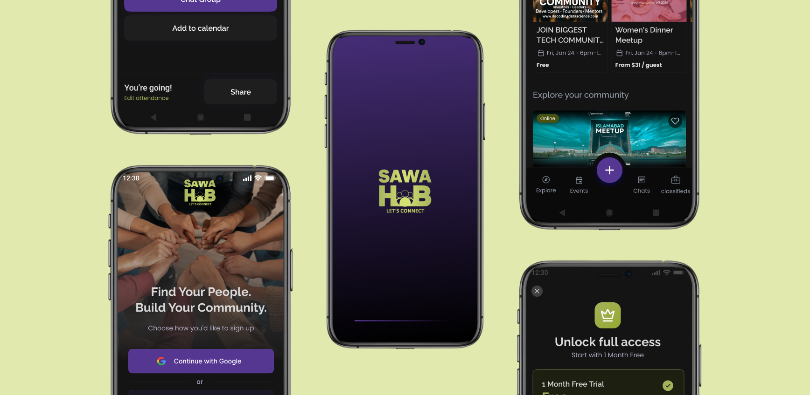

Community App
Connecting People Through Shared Experience
-
Role:
-
UI/UX Design
Product Design
Admin Dashboard Design
-
Category:
-
Community Platform
-
Timeline:
-
Client Project
-
Tools Used:
-
Figma
Wireframing
Design Systems
Role: UI/UX Design, Product Design, Admin Dashboard Design
Category: Community Platform
Timeline: Client Project
Tools Used: Figma, Wireframing, Design Systems
Overview
A Dubai-based client approached me to design a community-driven mobile application that helps people discover activities, connect with like-minded individuals, and participate in real-world events.
As the UI/UX Designer, I led the project end-to-end, from understanding product requirements to designing high-fidelity mobile experiences and a scalable admin dashboard.
The Problem
In fast-paced cities like Dubai, especially among expats and young professionals, building meaningful social connections is challenging.
Key issues identified:
- Social circles are often temporary
- Activity discovery is scattered across platforms
- Users hesitate to interact due to trust & safety concerns
Most existing solutions fail because they either:
- Focus only on event listings (no real interaction), or
- Enable social connections without encouraging real-world engagement
There is no unified platform that balances discovery, interaction, and trust.
The Goal
Design a platform that:
- Encourages real-world participation, not passive browsing
- Connects users based on shared interests
- Creates a safe and moderated environment
- Supports both participants and event hosts
Target Users
- Young professionals (21–40)
- Expats living in urban environments
- Social but time-constrained individuals
- Users seeking meaningful connections, not just scrolling
Key Product Challenges
This project required solving deeper UX problems beyond visuals.
1. Cold Start Problem
How might we help users quickly find relevant activities?
2. Trust & Safety
How might we make users feel comfortable meeting new people?
3. Engagement vs Privacy
How might we enable interaction without long-term exposure?
4. Feature Complexity
How might we simplify a product that includes events, chat, booking, hosting, and moderation?
My Approach
I designed the experience around one core principle:
"Drive users toward real-world action while maintaining safety and simplicity."
1. Personalization from Day One
Users select interests during onboarding to instantly tailor their experience.
2. Action Over Browsing
The interface encourages users to:
- Join events
- Book activities
- Host experiences
Rather than endlessly scrolling.
3. Privacy-First Interaction
Interactions are designed to feel safe, controlled, and temporary.
User Flow
The product flow was designed to minimize friction and guide users toward participation.
Onboarding → Interest Selection → Personalized Feed → Event Details → Join Event → Temporary Chat → Attend → Feedback
Key decisions included reducing unnecessary steps during onboarding, prioritizing quick access to relevant events, and limiting interaction until user intent is clear.

The Solution
I designed a community-first platform that integrates activity discovery, event participation and hosting, controlled user interaction, and moderation and safety systems.
Key Feature Highlight
Temporary Chat System (Privacy-First Interaction Model)
The chat activates only after joining an event and is automatically disabled once the event ends. This prevents long-term exposure and misuse while still enabling meaningful interaction.
This feature directly addresses trust, safety, and privacy concerns.
Design Process
1. Design System
I built a scalable design system with a dark theme, consistent typography and spacing, and reusable components for scalability.
Image placeholder
2. Wireframing
I focused on simplifying complex flows, reducing cognitive load, structuring multi-step interactions clearly, and prioritizing key actions like Join, Book, and Host.
Image placeholder
3. High-Fidelity UI
Key design decisions included a card-based layout for quick scanning, strong contrast for readability, and clear CTAs to reduce decision friction.
Image placeholder
4. Admin Dashboard
I also designed a powerful backend system to support user moderation, event approvals, reports, safety management, payments, and analytics.
Image placeholder
Key Design Decisions
Card-Based UI
Improves content scannability and comparison.
Interest-Based Personalization
Solves the cold start problem and increases relevance.
Strict Onboarding Filters
Ensures higher-quality community interactions.
Temporary Chat System
Balances engagement with privacy and safety.
Challenges
The biggest challenge was balancing a feature-rich product with a simple and intuitive experience.
Avoiding user overwhelm while handling complex features, designing interactions that feel safe without limiting engagement, and maintaining clarity across multiple user actions were central UX concerns.
Expected Impact
This solution is designed to increase engagement through personalized discovery, improve event participation rates, build trust through controlled interactions, and enable scalable moderation via admin tools.
Key Learnings
Clear and guided user flows significantly improve engagement. Trust and safety are critical in community-based platforms, and simplifying complex systems is more valuable than adding more features.
Final Result
This project demonstrates my ability to solve complex UX problems, design for real-world behavior rather than just screens, and balance user needs with business and safety requirements.